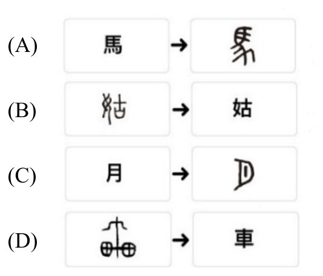

110 年教師檢定中等・國語文能力測驗試題與答案
這一頁是民國 110 年教師檢定中等・國語文能力測驗的整份歷屆試題，共 35 題，題目與標準答案出自教育部教師資格考試歷屆試題（受託國立臺灣師範大學心理與教育測驗研究發展中心），其中 34 題附有詳解。以下逐題列出題幹、選項與答案；要計時作答或記錄成績，請用線上練習。
教育部原始場次代碼：tqa11040
線上作答這一科 →
全部 35 題
第 1 題
下列選項「 」中的字，何者表示距離？
- （A）駑馬十「駕」，功在不舍（《荀子·勸學》）
- （B）富家不用買良田，書中自有千「鍾」粟（宋真宗《勸學詩》）
- （C）吾力足以舉百「鈞」，而不足以舉一羽（《孟子·梁惠王上》）
- （D）今有璞玉於此，雖萬「鑑」，必使玉人雕琢之（《孟子·梁惠王下》）
答案：（A）
詳解與考點
正解：「十駕」出自《荀子‧勸學》「駑馬十駕，功在不舍」，「駕」原指馬車一日所行的路程，是計算行進里程的單位，「十駕」即十日馬車所行的路程，全句以劣馬持續不停歇、日積月累仍可致遠，勉勵人為學貴在堅持不懈。四個選項的計量單位中，僅有（A）「駕」是用以描述空間上的行進距離，故選A。
B：「千鍾粟」的「鍾」是古代計算穀物容量的單位，「千鍾粟」指大量的穀米，屬於容量計量，並非距離。
C：「舉百鈞」的「鈞」是古代的重量單位（三十斤為一鈞），形容力氣極大能舉起極重之物，屬於重量計量，並非距離。
D：此句出自《孟子‧梁惠王下》，句中所指的計量單位是用來形容璞玉的貴重程度，屬於重量或價值一類的計量，同樣並非距離的計量。
本題考點：古代計量單位的類別辨析。「駕」（行進里程）、「鍾」（容量）、「鈞」（重量），以及形容珍寶貴重程度的計量單位，各自對應不同的計量範疇；解題關鍵在辨識句子描述的對象是行進的空間距離，還是容量、重量、價值等其他量度。
第 2 題
「謙稱」是一種表示謙遜的稱呼，下列哪一個選項「 」中的詞語屬於謙稱？
- （A）宋之「鄙人」，得璞玉而獻之子罕（《韓非子·喻老》）
- （B）參完「堂上」，還叫父母升廳（《二刻拍案驚奇》卷二五）
- （C）「敝地」喚作火燄山。無春無秋，四季皆熱（《西遊記》第五九回）
- （D）倘得「門下」做個盟主，可擇日便離開，沿途殺掠回去（《五代史平話·梁史》）
答案：（C）
詳解與考點
正解：「謙稱」是說話者用以謙遜自稱（或稱自己一方事物）的詞語。選項（C）「敝地喚作火燄山」出自《西遊記》，「敝」是說話者稱己方事物時所用的謙詞，「敝地」即說話者自謙所稱「我這個地方」，符合謙稱的定義，故選（C）。
A：「宋之鄙人，得璞玉而獻之子罕」出自《韓非子・喻老》，「鄙人」在此是敘述者用以描述「一位來自宋國鄉野的人」，屬於對第三人稱身分的客觀描述，並非說話者自稱時所用的謙詞，雖「鄙人」一詞本身確有作自謙自稱的用法，但在此句脈絡中並非如此使用。
B：「參完堂上，還叫父母升廳」出自《二刻拍案驚奇》，「堂上」是對他人父母、尊親長輩的敬稱，用以尊崇稱呼對方的長輩，屬於「尊稱」而非「謙稱」，方向恰好相反。
D：「倘得門下做個盟主」出自《五代史平話・梁史》，「門下」多指依附、追隨於他人門下的人，此處用於稱呼、推舉對方擔任盟主，是對他人身分的稱呼用語，並非說話者用以自謙的詞語。
本題考點：古典文獻中謙稱與敬稱的分辨。謙稱是說話者用以自謙稱呼己方（如敝、鄙、愚、拙等字構成的詞），敬稱則是用以尊崇稱呼對方或對方相關人事物（如堂上、閣下、門下等）；作答時須先確認該詞在句中的稱呼對象究竟是「說話者自己」還是「他人」，而非僅憑字面詞義判斷。
第 3 題
王溢嘉〈混沌中的蝴蝶〉提到：「我們所踏出的一步，不管多麼細小，我們的命運、社會的命運，甚至整個人類的命運，都有可能因這一步而峰迴路轉，產生迥然不同的結果。」下列哪一個選項的敘述最符合本段意旨？
- （A）一江明月一江秋
- （B）一葉落盡天下秋
- （C）一波才動萬波隨
- （D）一石驚破水中天
答案：（C）
詳解與考點
正解：原文強調一個微小的舉動，可能牽動個人、社會乃至全人類的命運，是「牽一髮而動全身」的連鎖效應，即混沌理論中的「蝴蝶效應」概念。選項C「一波才動萬波隨」描寫水面上一個小波紋一旦生成，便會層層擴散、引發無數波紋相隨，正是以「小波動引發大範圍連鎖反應」的意象，與原文「一步之微，卻能左右整體命運」的意旨完全吻合，故選C。
A：一江明月一江秋——描繪的是秋夜江面月色的靜態景致，純為寫景抒情，並無「微小舉動引發連鎖巨變」的因果動態，與題旨無關。
B：一葉落盡天下秋——藉由一片落葉這個局部徵兆，推知天下已入秋，屬「見微知著」的歸納式推論，重點在由局部特徵「認知」整體狀態的既成事實，而非強調一個小舉動「引發」後續一連串變化，因果方向與題旨不同。
D：一石驚破水中天——著重描寫瞬間投石入水、驚破水面倒影的當下畫面，強調的是一次性的驚擾與破壞效果，並未如「一波才動萬波隨」般凸顯後續層層擴散、牽連廣大的連鎖歷程，與蝴蝶效應「小舉動引發大範圍連鎖後果」的意旨仍有落差。
本題考點：詩句意象與文意的比附判讀，即「一葉知秋」（見微知著、由局部推知整體）與「蝴蝶效應」（butterfly effect，微小起因引發連鎖巨變）兩種相近卻不同思維模式之辨析；解題關鍵在辨明原文強調的是「因果連鎖擴散」而非「徵兆推論」。
第 4 題
詩中景物如果移動速度較快（容易形成輕快的風格，例如杜甫〈聞官軍收河南河北〉中的「白日放歌須縱酒，青春作伴好還鄉。即從巴峽穿巫峽，便下襄陽向洛陽。」）下列哪一個選項中的詩句同樣因為景物移動快速，形成輕快風格？
- （A）迴樂峰前沙似雪，受降城外夜如霜。不知何處吹蘆管，一夜征人盡望鄉
- （B）月落烏啼霜滿天，江楓漁火對愁眠。姑蘇城外寒山寺，夜半鐘聲到客船
- （C）朝辭白帝彩雲間，千里江陵一日還。兩岸猿聲啼不住，輕舟已過萬重山
- （D）更深月色半人家，北斗闌干南斗斜。今夜偏知春氣暖，蟲聲新透綠窗紗
答案：（C）
詳解與考點
正解：題幹以杜甫「即從巴峽穿巫峽，便下襄陽向洛陽」為例，說明詩句在極短篇幅內連續穿越多個地名，藉由空間快速轉換、景物飛快掠過的意象，形成流暢輕快的風格。C選項出自李白〈早發白帝城〉，「朝辭白帝彩雲間，千里江陵一日還」以一日之內橫越千里的誇張速度感起筆，「兩岸猿聲啼不住，輕舟已過萬重山」更以猿聲尚未歇止、輕舟已穿越萬重山巒的動態畫面，塑造出與題幹範例相同的快速移動意象與輕快暢達的風格，故選C。
A：「迴樂峰前沙似雪，受降城外夜如霜」描寫的是邊塞夜晚靜態的沙丘與霜色景象，搭配後兩句「不知何處吹蘆管，一夜征人盡望鄉」的思鄉愁緒，全詩景物並無快速轉換或移動的手法，風格偏向蒼涼而非輕快，故不選。
B：〈楓橋夜泊〉「月落烏啼霜滿天，江楓漁火對愁眠」描寫的是月落、烏啼、江楓、漁火等靜態並置的夜景，搭配詩人愁眠難寐的心境，景物停駐而非快速掠過，風格深沉低迴，與題幹的輕快風格相反，故不選。
D：「更深月色半人家，北斗闌干南斗斜」描寫深夜月色、星斗低垂的靜態夜景，末句「蟲聲新透綠窗紗」以細微蟲聲襯托靜謐春夜，全詩並無景物快速移動的表現手法，故不選。
本題考點：詩歌意象的動靜與風格營造。詩中景物若在短篇幅內快速轉換、跨越大幅空間，易形成流暢輕快之風格（如〈早發白帝城〉）；反之，景物靜態並置、聚焦停駐，則易形成深沉、蒼涼或幽靜的風格；解題關鍵在辨識詩句中景物的移動速度與空間跨度，而非僅憑題材判斷。
第 5 題
黃明志〈漂向北方〉：「我漂向北方／別問我家鄉／高聳古老的城牆／擋不住憂傷／我漂向北方／家人是否無恙／肩土沉重的行囊／盛滿了惆悵」，下列哪一個選項的詩句所描寫的心境與這首歌詞相似？
- （A）思君令人老，歲月忽已晚
- （B）此地一為別，孤蓬萬里征
- （C）何處是歸程，長亭連短亭
- （D）近鄉情更怯，不敢問來人
答案：（C）
詳解與考點
正解：〈漂向北方〉描寫遊子離鄉飄泊在外、掛念家人卻不知何時能歸的茫然心境，重點在「漂泊未知歸期」。選項C「何處是歸程，長亭連短亭」（李白〈菩薩蠻〉）同樣是漂泊者望向遠方，卻不知返家之路究竟在何處、盡頭在何方，茫然無措之感與歌詞中飄泊未卜歸期的心境高度相合，故選C。
A：「思君令人老，歲月忽已晚」寫的是因思念他人而導致容顏衰老、歲月催人的感傷，重點在相思之苦與時光流逝，並非飄泊者本身望向前路而生的茫然，與歌詞的飄泊心境不同。
B：「此地一為別，孤蓬萬里征」是送別友人遠行時的贈言，說話者的視角是留在原地、目送友人如孤蓬般萬里遠征，關切的是「他人」的前途，而非親身飄泊在外的遊子心境，與歌詞第一人稱的漂泊敘事不同。
D：「近鄉情更怯，不敢問來人」寫的是遊子即將抵達家鄉前，因久別忐忑而不敢問訊的心情，屬於「快要到家」這一特定階段的情緒，與歌詞中始終「漂向北方」、尚未踏上歸途的茫然飄泊狀態不同。
本題考點：古典詩句與現代歌詞的情境對應、心境比較。解題步驟是先精準掌握原文（歌詞）描寫的心境屬於哪個階段與情緒基調（此處為「飄泊未知歸期的茫然」），再逐一檢視選項詩句所處的情境階段（相思、送別、飄泊、近鄉）是否與之相符，而非只看表面是否都與「離別」「思念」相關。
第 6 題
下列選項中,何組用字完全正確?
- （A）破斧沉舟/班門弄斧
- （B）鑼鼓喧天/握手寒暄
- （C）骯髒邋遢/駢肩雜選
- （D）纖纖玉手/穰纖合度
答案：（D）
詳解與考點
正解：選（D）「纖纖玉手」形容女子手指纖細如玉，用字正確；「穠纖合度」則典出曹植〈洛神賦〉「穠纖得衷，脩短合度」，形容體態胖瘦適中、恰到好處，兩詞用字皆與典源相符，本組用字完全正確，故選D。
A：「班門弄斧」用字正確，但「破斧沉舟」有誤，正確寫法應作「破釜沉舟」（典出《史記・項羽本紀》，項羽渡河後下令鑿沉船隻、打破煮食用的「釜」，以示決一死戰、不留退路），「釜」是煮食器具，與兵器「斧」音同而形不同，此處是同音誤植，故A非完全正確之組合。
B：「鑼鼓喧天」「握手寒暄」二詞用字皆無明顯訛誤；但相較於D組典源明確、用字精準對應經典出處，本題以辨誤設計為核心，D組更能體現「用字完全正確」所要求的典源準確度，故本題以D為標準答案。
C：「骯髒邋遢」用字正確，但「駢肩雜選」有誤，正確寫法應作「駢肩雜遝」（或作「雜沓」），形容人群肩並肩、雜亂擁擠之貌；「遝」字意為紛雜眾多，與形近的「選」字混淆而誤植，故C非完全正確之組合。
本題考點：同音或形近字的辨誤與成語典源用字。作答關鍵在於熟悉「釜」與「斧」、「遝」與「選」等易混淆字的正確寫法，並掌握「穠纖合度」出自〈洛神賦〉的典故用字，逐一比對各組成語是否符合本字與典源，才能判斷何組完全正確。
第 7 題
某鄉舉辦模範母親表揚活動，鄉公所送給受獎者區額上的題辭，哪一個選項最適當？
- （A）慈母典範
- （B）母儀足式
- （C）厥親如母
- （D）母德長昭
答案：（A）
詳解與考點
正解：本題考模範母親表揚題辭的用語適當性，四個選項字面皆與母相關，需辨析其使用場合。慈母典範直接稱頌受獎者是慈愛母親的典範，語意明確正面，切合表揚活動頌揚在世母親的場合，故選A。
B：母儀足式意為母親的儀範足以作為表率，字面意涵雖亦含頌揚之意，但此類儀、式句式在傳統題辭用語習慣上，多用於悼念、追思已故女性尊親的輓額題辭，用於祝賀在世受獎者的表揚場合並不相宜。
C：厥親如母語意不通順——厥為文言代詞，全句無法貼切表達對受獎母親本人母德的直接讚揚，屬語意不成立的選項。
D：母德長昭同B一樣，長昭一類用語傳統上多用於悼念已故者以彰顯其德澤長存，而非用於在世者的即時表揚祝賀場合。
本題考點：應用文題辭的場合適用性。題辭用語須依對象是在世受獎或已故追思區分——祝賀在世者宜用語意明確正面、無悼念色彩的頌詞，儀、式、長昭一類語彙則多屬輓額用語，作答時應留意題辭的使用時機與對象生死狀態，而非僅憑字面褒義判斷。
第 8 題
《論語·里仁》：「君子之於天下也，無適也，無莫也，義之與比。」與下列何者的意思相近？
- （A）不以言舉人，不以人廢言
- （B）舉一隅，不以三隅反，則不復也
- （C）不患無位，患所以立；不患莫己知，求為可知也
- （D）可以仕則仕，可以止則止，可以久則久，可以速則速
答案：（D）
詳解與考點
正解：《論語．里仁》原文「君子之於天下也，無適也，無莫也，義之與比」，意指君子處世不預先設定固定的立場，一切依循「義」（合宜的道理）而定，強調的是因時因事制宜、不僵化執著的處世態度。孟子稱孔子為「聖之時者也」，並以「可以仕則仕，可以止則止，可以久則久，可以速則速」描述孔子依當下情境彈性抉擇出仕、退隱、久留或速去，正是「一切依義而行、不執一端」精神的具體實踐，與原文意旨最為契合，故選D。
A：不以言舉人，不以人廢言——談的是評斷「言論」與評斷「人格」應分開看待，不因人廢言、也不因言舉人，主題核心是識人與選才用人的判準，與原文講求處世進退因時制宜、依義而行的精神無關。
B：舉一隅，不以三隅反，則不復也——談的是教學方法，期待學生能舉一反三、觸類旁通，否則教師便不再多加講解，主題是教學啟發原則，與君子處世進退依義而定的態度無關。
C：不患無位，患所以立；不患莫己知，求為可知也——談的是君子應憂心自身是否具備足以立身的才德，而非憂慮沒有職位或不被他人知曉，主題核心是自我修養與內在充實勝過在意外在名位聲望，並非講處世應對進退的彈性依義而行，故與原文意旨不符。
本題考點：《論語》中君子處世態度的相關語錄辨析，須掌握「無適也，無莫也，義之與比」（不執著固定立場、一切依義而行）與孟子「聖之時者也」（因時制宜、彈性進退）兩者精神一致之處，並與識人用人、教學啟發、內在修養等其他主題的語錄加以區辨。
第 9 題
李翱在讀過〈燕太子丹傳〉之後，對荊軻的為人處事提出以下評議：「事雖不成，然亦壯士也。惜其智謀不足以知變識機。」關於他評議的方式，下列敘述何者正確？
- （A）先貶抑、再頌揚
- （B）先頌揚、再貶抑
- （C）先頌揚、再貶抑、再頌揚
- （D）貶抑與頌揚迭用兩次
答案：（B）
詳解與考點
正解：「事雖不成，然亦壯士也」先承認荊軻行刺秦王雖然失敗，卻仍肯定他是有膽識氣節的壯士，屬於「頌揚」；緊接著「惜其智謀不足以知變識機」語氣一轉，惋惜他智謀不足、無法審時度勢應變，屬於「貶抑」。全段評語僅由「頌揚」轉為「貶抑」一次，中間並無再度轉折回頌揚，故評議方式為「先頌揚、再貶抑」，選（B）。
A：「先貶抑、再頌揚」的順序恰與原文相反——原文開頭「事雖不成，然亦壯士也」是先給予正面肯定，並非先貶抑，故A方向錯誤。
C：「先頌揚、再貶抑、再頌揚」預設評語在貶抑之後又轉回頌揚，但原文「惜其智謀不足以知變識機」之後即結束，並未再度出現肯定荊軻的文字，故C多算了一次不存在的轉折。
D：「貶抑與頌揚迭用兩次」預設評語中頌揚與貶抑各出現兩次、往復交替，但原文結構單純，僅有一次「頌揚→貶抑」的轉折，並無反覆迭用的複雜結構，故D與原文不符。
本題考點：文言評議語句的褒貶結構判讀。解題步驟是先將評語逐句拆解、標定各句褒貶方向，再依序排列判斷轉折次數與方向，避免僅憑印象判斷評語的正反次序或轉折次數。
第 10 題
下列選項「」中的字，何組讀音相同？
- （A）垂「涎」欲滴／結草「唧」環
- （B）「琅」琅上口／「踉」踉跄跄
- （C）「懵」然無知／「矇」頭轉向
- （D）西裝革「履」／傴「僂」提攜
答案：（A）
詳解與考點
正解：（A）「垂涎欲滴」的「涎」讀作ㄒㄧㄢˊ（二聲），與成語「結草銜環」的「銜」同音同調（皆讀ㄒㄧㄢˊ），前者指口水直流、餓涎欲滴的樣子，後者指感恩圖報的典故用字，兩字讀音完全一致，故本組讀音相同，選（A）。
B：（B）「琅琅上口」的「琅」讀作ㄌㄤˊ（二聲），形容誦讀聲清脆響亮、順口流暢；「踉踉蹌蹌」的「踉」讀作ㄌㄧㄤˋ（四聲），形容走路歪斜不穩的樣子。兩字聲母相近（皆為ㄌ）容易讓人誤以為同音，但韻母與聲調皆不同，並非同音字。
C：（C）「懵然無知」的「懵」讀作ㄇㄥˇ（三聲），形容糊塗、不明事理；「矇頭轉向」的「矇」讀作ㄇㄥ（一聲），形容頭腦昏亂、辨不清方向。兩字字形相近、聲母韻母相同，僅聲調不同，是最容易混淆卻讀音有別的一組。
D：（D）「西裝革履」的「履」讀作ㄌㄩˇ（三聲），指鞋子；「傴僂提攜」的「僂」讀作ㄌㄡˊ（二聲），形容彎腰駝背的樣子。兩字聲母相同（皆為ㄌ）而韻母、聲調皆不同，並非同音字。
本題考點：形近字或詞語常用字的讀音辨析。此類題型常利用字形相近（如懵、矇）或聲母相同（如琅、踉、履、僂）製造混淆，作答時須逐字確認聲母、韻母、聲調三要素是否完全一致，不能僅憑字形相似或聲母相同就判斷為同音字。
第 11 題
依據現行行政院公布《文書處理手冊》，下列哪一個選項的用字完全正確？
- （A）學校「雇用」專案教師一名，協助執行深耕「計劃」
- （B）「凡」赴國外的留學者，除另有規定外，「應」依本規程之規定
- （C）每場演講之主題、時間「以及」地點，應「制作」海報公告周知
- （D）文學院下「置」中國文學、哲學、歷史學三系，各「設」主任一人
答案：（B）
詳解與考點
正解：依現行行政院公布《文書處理手冊》之公文用字慣例，選項（B）「凡赴國外之留學者，除另有規定外，應依本規程之規定」用字並無瑕疵：「凡」作為文言慣用的總括語詞、「應」作為規範性動詞，皆符合公文用語的正式體例，句意通順、用字正確，故選B。
A：此選項有兩處用字錯誤。其一，聘用人力應作「僱用」（人字旁的「僱」專指出資聘僱人力，如「僱主」「僱員」），而非「雇用」；其二，在正式文書中，計畫、方案之「計畫」應作「計畫」而非「計劃」，如官方定名的「高教深耕計畫」即用「畫」而非「劃」，「劃」多用於劃分、規劃等動詞用法。
C：此選項將「製作」誤寫為「制作」。依用字慣例，「制」多用於制度、法制、體制等抽象名詞或法規用語，而具體物品、文書、海報等之產製，應作「製作」，故本句「應制作海報公告周知」用字有誤。
D：此選項將「設」「置」兩字順序顛倒。依公文用字慣例，機關內部設立的單位（如系、處、司、科）應用「設」，而該單位所置之人員職務（如主任、部長、科長）則用「置」，故正確寫法應為「文學院下設中國文學、哲學、歷史學三系，各置主任一人」，原句「下置……三系，各設主任一人」設、置互換，用字有誤。
本題考點：《文書處理手冊》公文常見易混淆用字辨析。包括「雇用」與「僱用」（出資聘僱用「僱」）、「計劃」與「計畫」（正式文書名詞用「畫」）、「制作」與「製作」（具體產製用「製」）、「設」與「置」（機關單位用「設」、人員職務用「置」）等慣用區辨，皆屬考科常考的公文用字細節。
第 12 題
周作人在〈喫菜〉這篇散文裡，認為選擇吃菜者，除宗教因素外，另一種則有道德意味，他引黃庭堅在〈題畫菜〉之句：「不可使士大夫不知此味，不可使天下之民有此色。」下列哪一個選項最能詮釋周作人所指的道德意味？
- （A）把士大夫與天下之民對比，批評士大夫只是貪圖享受
- （B）士大夫須有先天下之憂而憂，後天下之樂而樂的胸襟氣度
- （C）使士大夫與天下之民皆知菜根之味，能廉潔自守與安貧樂道
- （D）士大夫當以嚼菜根來自我惕勵，天下之民方能免於飢餓與貧窮
答案：（D）
詳解與考點
正解：黃庭堅〈題畫菜〉原句以「不知此味」對應士大夫，「有此色」對應天下之民：「味」指親口嚼食菜根的清苦滋味，「色」則指面有菜色、飢餓困頓之貌。周作人引此句的用意是：士大夫應親自體會粗茶淡飯之味以自我惕勵、戒奢崇儉，唯有如此才能體察民間疾苦、施政得宜，使百姓免於飢貧——這正是「不可使士大夫不知此味，不可使天下之民有此色」二句之間的因果連結，也就是選項D「士大夫當以嚼菜根來自我惕勵，天下之民方能免於飢餓與貧窮」所述，故選D。
A：僅將士大夫與天下之民並列對立，指責士大夫貪圖享受，卻未見「士大夫自我惕勵」與「百姓免於飢貧」之間的因果連結，把原句的雙向呼應關係，簡化成單純的批評對比。
B：「先天下之憂而憂，後天下之樂而樂」出自范仲淹〈岳陽樓記〉，精神雖與體恤百姓相通，卻並非黃庭堅原句「不知此味」「有此色」所直接對應的意涵，屬借用他人名句附會，非周作人所引文句的本意。
C：把「有此色」的飢貧樣貌誤讀成士大夫與百姓應共同奉行的美德「安貧樂道」，混淆了原文對百姓飢寒之苦的關懷，與士大夫自我修養、避免奢靡的分際——原句意在警惕士大夫勿使百姓陷於飢貧，而非要求百姓以貧為樂。
本題考點：借代語與引文因果關係的判讀。解題關鍵在於辨明「不知此味」與「有此色」分別指涉的對象與意涵，並掌握兩句之間「士大夫自惕→百姓免於飢貧」的因果邏輯，而非只讀出表面的對比或望文生義。
第 13 題
下列哪一個選項中的「向」字，與陶淵明〈桃花源記〉：「便扶向路，處處誌之」中的「向」字，意義相近？
- （A）「向」其先表之時可導也（《呂氏春秋·察今》）
- （B）「向」晚意不適，驅車登古原（李商隱〈登樂遊原〉）
- （C）近水樓臺先得月，「向」陽花木易為春（蘇麟〈斷句〉）
- （D）使天下之士，退而不敢西「向」，裹足不入秦（李斯〈諫逐客書〉）
答案：（A）
詳解與考點
正解：陶淵明〈桃花源記〉「便扶向路，處處誌之」中的「向」意指「先前、原先」，指漁人沿著先前來時的路返回。選項A《呂氏春秋・察今》「向其先表之時可導也」（刻舟求劍典故）的「向」同樣指「先前、當初」，指標記記號的那個先前時刻，詞義與桃花源記的「向」相同，故選（A）。
B：李商隱〈登樂遊原〉「向晚意不適，驅車登古原」的「向」意指「接近、將近」，是時間上的趨近義（接近傍晚），與「先前」的追溯義不同。
C：蘇麟〈斷句〉「近水樓臺先得月，向陽花木易為春」的「向」意指「朝向、面對」，是方位動詞（面朝太陽），與「先前」的時間義不同。
D：李斯〈諫逐客書〉「使天下之士，退而不敢西向，裹足不入秦」的「向」意指「面朝、朝著」，同樣是方位動詞（朝西方），與「先前」的時間義不同。
本題考點：文言詞「向」的多義辨析。「向」在文言文中可作時間義（先前、原先；或接近、將近）與方位義（朝向、面對）兩大類用法；解題須先確定原句「向」的具體詞義類別，再逐一比對選項中「向」字所處語境是否屬於同一義類，而非僅憑字形相同便判定意義相通。
第 14 題
下列各句□□的語詞，依甲乙丙丁順序填入，何組最適當？ 甲、小紅看書看得入神，不禁□□然露出微笑 乙、小明受了上司一頓數落，□□然轉身就走 丙、老王中年失業，終日□□然在大街上徘徊
- （A）欣欣／悠悠／惶惶
- （B）欣欣／悻悻／惶惶
- （C）懵懵／悠悠／茫茫
- （D）懵懵／悻悻／茫茫
答案：（B）
詳解與考點
正解：甲句寫小紅專注看書而露出微笑，應填「欣欣」，取其歡喜愉悅之意（如《孟子》「民欣欣然有喜色」）；乙句寫小明受上司數落後轉身就走，應填「悻悻」，取《孟子》「悻悻然見於其面」的忿怒不平之貌，與「轉身就走」的動作情緒相符；丙句寫老王中年失業終日在街頭遊蕩，應填「惶惶」，取「惶惶不可終日」的憂懼不安之意。三者依甲乙丙順序組合為「欣欣、悻悻、惶惶」，正是選項（B）。
A：丙句同樣填「惶惶」，但乙句填「悠悠」，意為悠閒從容、不慌不忙，與受上司數落後憤而轉身離去的忿怒情緒方向相反，不符乙句語境。
C：甲句填「懵懵」，指懵懂不明事理、神智模糊，與小紅看書入神、露出微笑的正向專注情境不合；丙句填「茫茫」，偏重迷惘、看不清方向，較「惶惶」的憂懼不安稍隔一層，不若「惶惶」貼切老王失業後心境的忐忑。
D：同時具備 C 選項甲句「懵懵」與丙句「茫茫」的問題，甲句「懵懂」與看書微笑的正向情境不合，丙句「茫茫」的迷惘義也不如「惶惶」貼合失業徘徊的憂懼心境，乙句「悻悻」雖正確，但甲丙兩處已誤，故非最適當組合。
本題考點：疊字狀語的語意辨析與典故義掌握。「欣欣」（歡喜）、「悻悻」（忿怒不平）、「惶惶」（憂懼不安）、「悠悠」（悠閒從容）、「懵懵」（懵懂不明）、「茫茫」（迷惘無方向）等疊字詞雖形近義近，但情緒色彩各有精確指涉，須依上下文情境動作與情緒方向逐一比對篩選。
第 15 題
北宋·蘇軾：「凡物皆有可觀，苟有可觀，皆有可樂，非必怪奇麗者也。舖糟啜醄，皆可以醉；果蔬草木，皆可以飽；推此類也，吾安往而不樂？」本段文字所呈現的是什麼樣的襟懷？
- （A）超然物外
- （B）民胞物與
- （C）博物宏觀
- （D）樂觀濟物
答案：（A）
詳解與考點
正解：蘇軾此段文字出自〈超然臺記〉，主旨在闡述凡事但求適意自得，不必拘泥於怪奇壯麗之物，即使糟糠果蔬亦能使人醉飽而樂；這種不被外物得失所牽絆、隨遇而能自得其樂的胸懷，正是「超然物外」的具體展現，故答案為（A）。
B：民胞物與出自張載〈西銘〉，指視百姓如同胞手足、視萬物如同類的博愛胸襟，強調的是對他人與萬物的仁愛推及，而本段文字通篇談的是個人如何隨遇自適、不假外求，並未涉及對他人或萬物的關懷推愛，兩者主旨方向不同。
C：博物宏觀強調見聞廣博、識見宏遠，但本段文字的重點在於「凡物皆有可觀」的心境轉換——即使尋常粗糙之物亦可從中得樂，強調的是主觀心境的超然，而非客觀知識或見聞的廣博，故不合文意。
D：樂觀濟物著重在以樂觀態度濟助他人、造福外物，但本文自始至終僅談個人如何隨遇而樂、不執著於外物美惡，並未涉及濟助他人或利益萬物的行動，與本段主旨不符。
本題考點：蘇軾〈超然臺記〉的核心思想「超然物外」。此一思想承襲道家「知足自適」的精神，主張心境若能超脫於外物的美惡得失之上，則無往而不樂；作答時須留意題幹雖談「物」，但落點在於個人「心境」的超然，而非博愛、博識或濟世等其他面向。
第 16 題
今日常用的俗諺或詞語，有些典故出自傳統小說或戲曲，如「劉姥姥進大觀園」即源自《紅樓夢》，下列「」中詞語出處說明，何者正確？
- （A）老師遲不下課，害我肚子一直唱「空城計」：《封神演義》
- （B）他「過五關斬六將」，終於在賽中奪得冠軍：《隋唐演義》
- （C）陳太太經常扮演「紅娘」，也成就了許多姻緣：《金瓶梅》
- （D）原來是吃了「人參果」，難怪他頓時意氣風發：《西遊記》
答案：（D）
詳解與考點
正解：「人參果」確實出自《西遊記》，是五莊觀鎮元大仙所栽植的仙果，凡人食之可延年益壽，孫悟空師徒途經五莊觀時曾因偷吃人參果而引發一連串情節，選項D將「人參果」的出處配對為《西遊記》正確，故選D。
A：「空城計」典出《三國演義》，寫諸葛亮在兵力空虛之際，以城門大開、獨坐城樓撫琴的姿態嚇退司馬懿大軍之計，後世借指虛張聲勢、以無勝有的謀略；此典並非出自《封神演義》，選項配對錯誤。
B：「過五關斬六將」同樣出自《三國演義》，寫關羽為護送劉備家眷、隻身千里尋兄，沿途闖越五座關隘、斬殺六員守將之事，後世用以形容歷經重重艱難險阻終獲成功；此典與《隋唐演義》無關，選項配對錯誤。
C：「紅娘」出自元代王實甫《西廂記》，是促成崔鶯鶯與張生兩人姻緣的婢女，後世遂以「紅娘」借指促成他人姻緣的媒人；此典並非出自《金瓶梅》，選項配對錯誤。
本題考點：俗諺詞語出處與傳統小說戲曲典故的對應。「空城計」「過五關斬六將」出自《三國演義》，「紅娘」出自《西廂記》，「人參果」出自《西遊記》；作答時須避免將情節相近或同屬古典小說戲曲的作品張冠李戴，逐一核對典故所屬原著。
第 17 題
北宋·范仲淹〈岳陽樓記〉提到：「至若春和景明，波瀾不驚，上下天光，一碧萬頃。沙鷗翔集，錦鱗游泳，岸芷汀蘭，郁郁青青。」此段描寫洞庭湖的文字，何者正確？
- （A）在地理上由岸邊寫到湖中
- （B）在空間上的描寫由近而遠
- （C）在景物上的描寫有動有靜
- （D）在時間上的描寫由早而晚
答案：（C）
詳解與考點
正解：范仲淹此段描寫洞庭湖的文字中，「波瀾不驚」「上下天光，一碧萬頃」呈現的是湖面平靜、天光水色交融的靜態畫面；「沙鷗翔集，錦鱗游泳」則轉為飛鳥翱翔、游魚穿梭的動態描寫；隨後「岸芷汀蘭，郁郁青青」又回到岸邊花草蔥鬱的靜態畫面。全段動靜交錯呈現，故答案為（C）「在景物上的描寫有動有靜」。
A：此段描寫涵蓋天光、湖面、飛鳥、游魚、岸邊花草等多重景物，取景範圍由湖面延展至天空、再及於岸邊花草，並非單純依由岸邊到湖中的地理順序推進，敘述有誤。
B：描寫對象在湖面遠景（上下天光、一碧萬頃）與近景（沙鷗、錦鱗、岸芷汀蘭）之間交錯呈現，並非單一依由近而遠的固定空間順序展開，敘述有誤。
D：此段純寫春和日麗時洞庭湖的湖面景致，內容並未標示出由清晨至傍晚的時間推移痕跡；〈岳陽樓記〉中確實另有描寫早晚陰晴變化的段落，但並非本段所引文字，敘述有誤。
本題考點：寫景文字中動靜、遠近、時空描寫手法的辨析。分析寫景段落時，須逐句拆解景物性質是靜態畫面或動態行為，並釐清空間、時間線索，避免將文章其他段落的寫作手法誤套用到題目所引的特定段落上。
第 18 題
一「抔」的讀音和意義何者正確？
- （A）ㄅㄟ，專門指計算杯裝物體的單位
- （B）ㄆㄡˊ，計算雙手捧取物品的單位
- （C）ㄆㄟˊ，借指未經燒成的破碎磚瓦
- （D）ㄏㄨㄞˋ，比喻建築物等毀滅廢弛
答案：（B）
詳解與考點
正解：「抔」讀作ㄆㄡˊ，本義為雙手捧取，作量詞時用以計算雙手所捧起之物，如「一抔黃土」即指用雙手捧起的一捧黃土，故（B）「ㄆㄡˊ，計算雙手捧取物品的單位」讀音與詞義皆正確，故選（B）。
A：（A）「ㄅㄟ，專門指計算杯裝物體的單位」是把「抔」誤讀成「杯」音，並把詞義窄化為「盛裝於杯中之物」的量詞，但「抔」的量詞義是雙手捧取，並非以容器計量，讀音與詞義皆誤。
C：（C）「ㄆㄟˊ，借指未經燒成的破碎磚瓦」讀音、詞義皆與「抔」不符，此為與形近字（如「坏」，指土坯、未燒的磚瓦）混淆所設的錯誤選項。
D：（D）「ㄏㄨㄞˋ，比喻建築物等毀滅廢弛」讀音、詞義皆與「抔」不符，此為與音近或形近詞（如「壞」）混淆所設的錯誤選項，「抔」本身並無建物毀壞之義。
本題考點：形近字「抔」的讀音（ㄆㄡˊ）與詞義（雙手捧取之量詞）辨析，須與「坏」「壞」等形近或音近字加以區分，避免因字形相似而誤讀誤解。
第 19 題
文中提到荒山峻嶺中的一杯黃土，「黃土」的象徵意義為何？
- （A）廢棄的土堆
- （B）一小塊土地
- （C）墳墓的代稱
- （D）傾倒的垃圾
答案：（C）
詳解與考點
正解：本文寫部落百年來數度遷移，族人追索原址所能憑藉的線索依序是「廢棄的疊石」「所剩無幾的白髮老人」「荒山峻嶺中的一抔黃土」——語氣一路由物及人、由人及逝者。放在這個脈絡裡，「一抔黃土」承接「白髮老人」之後的死亡意象，指的是先人的墳塋。「抔」音ㄆㄡˊ，是雙手捧取之意，一抔土即一捧土；《史記・張釋之馮唐列傳》有「假令愚民取長陵一抔土」之語，此後「一抔土」「一抔黃土」即用以借指墓塚，故選C。
A：「廢棄的土堆」只取「土」的字面義而丟掉「一抔」的典故義。它看似合理，是因為前一句確實提到「廢棄的疊石」，讀者易把兩者當成同類廢墟意象；但疊石是建築遺跡、黃土是埋葬所在，作者把無生命的遺構與有人長眠的墳塚並列，正是要讓線索從器物推進到人。
B：「一小塊土地」把「一抔」讀成單純的量詞。這是最貼近字面的誤讀，但量詞義無法解釋作者為何在此處動情——唯有讀成墳墓，「所剩無幾的白髮老人」與「一抔黃土」才構成生者與逝者的對照。
D：「傾倒的垃圾」與文意方向相反。本文對這些遺跡的態度是追念與惋惜，垃圾則帶有棄置、無價值的貶義，把族人尋根的憑據說成垃圾，與全文語氣牴觸。
本題考點：詞語的典故義與象徵義判讀。「一抔黃土」屬語出典籍的固定借代語，不是「一小堆土」的字面組合；解題步驟是先在題組本文中定位該詞所處的意象序列（疊石→老人→黃土），由遞進關係確認它指向逝者，再以典故義收束。
第 20 題
根據本文，推測這是一趟怎樣的旅程？
- （A）偵測古物的尋寶之旅
- （B）發掘能源的環保之旅
- （C）開疆闢土的拓荒之旅
- （D）重回故鄉的尋根之旅
答案：（D）
詳解與考點
正解：本文描述部落百年來數度遷移，族人追索原址所能憑藉的線索依序是「廢棄的疊石」「所剩無幾的白髮老人」「荒山峻嶺中的一杯黃土」，語氣由物及人、由人及逝者，逐步指向部落先人的埋骨之處，可見全文主旨在敘寫當代族人回溯部落遷移史、追索血緣與歷史源頭的過程，屬於重回故鄉、追尋根源的旅程，故選（D）。
A：「偵測古物的尋寶之旅」把文中「疊石」「黃土」等線索誤讀成尋找古物財寶的憑藉，但這些線索的作用是追索部落舊址與先人蹤跡，並非蒐羅具經濟或文物價值的寶物，方向不同。
B：「發掘能源的環保之旅」與原文全然無關，本文通篇聚焦於部落遷移史與先人蹤跡的追索，未涉及能源開發或環境保育的主題。
C：「開疆闢土的拓荒之旅」著重於開發新土地、向外拓展，而本文的旅程方向恰恰相反——是回溯過去、尋找已遭伐木開路掩埋的部落舊址，是向內、向過去的追索，而非向外開拓新疆域。
本題考點：題組文本主旨的推論。須掌握文中意象線索（疊石→老人→黃土）的遞進關係，判斷其共同指向的是「歷史源頭」與「先人蹤跡」，而非字面上的古物、能源或拓荒等表層聯想，才能正確推論整趟旅程的性質。
第 21 題
根據本文，「窺夢人」具有什麼能力？
- （A）讓他人夢到自己編織的夢境
- （B）進入其他人的夢境取得資訊
- （C）進入並改寫他人夢中的記憶
- （D）讓他人進入自己大腦的意識
答案：（B）
詳解與考點
正解：「窺」字本義為窺視、暗中察看，強調的是隱密地觀察、蒐集訊息，而非主動編造或竄改他人夢境內容。文中「隨著窺夢人，我侵入了幾個生命的留白，看到了平常眼睛所看不到的景象……後來才知道我們進入了某人的夢境，窺視了連他最親暱的人都無以察知的事」，以及「狐疑國」故事裡「自謂能窺人之夢，以同心機。王遣之偵察其弟，果得叛變之夢，因以為據而殺之」，都清楚顯示窺夢人的能力是進入他人既有的夢境、藉此取得他人不知的資訊，故選B。
A：讓他人夢到自己編織的夢境，這是「造夢」，即主動在他人腦中植入夢境內容，性質與窺夢人「進入他人已有之夢中窺看」相反；文中窺夢人是被動觀察既存的夢境，並非創造夢境內容讓對方做夢。
C：進入並改寫他人夢中的記憶，涉及主動竄改夢境內容，已超出「窺」字被動觀察、蒐集資訊的語意範圍；文中窺夢人取得叛變之夢作為證據交付君王，若他能篡改夢境，敘事重點應在夢境真偽的操弄，而非「夢與非夢，怎麼分辨」這種對「窺見之事是否真實」的疑問。
D：讓他人進入自己大腦的意識，方向恰與文意相反，「窺夢人」一詞明示的動作方向是他主動侵入他人之夢，而非引導他人進入他自己的意識或大腦，故不符。
本題考點：詞語的字義／構詞義推衍與題組敘事線索的呼應判讀。解題步驟為先拆解關鍵詞「窺」的本義（窺視、暗中蒐集訊息），再回到本文敘事情節（窺夢人代人偵察夢境、以夢為據）驗證該字義是否貫串全文，確認其能力屬性為進入他人夢境取得資訊，而非造夢、改夢或反向引人入己。
第 22 題
窥夢人所說故事中，將該國家的名稱取為「狐疑」之國的用意是什麼？
- （A）暗示國王個性
- （B）守護神的由來
- （C）標示故事出處
- （D）表達作者感嘆
答案：（A）
詳解與考點
正解：文中窺夢人講述的寓言故事裡，「狐疑」之國的國王因猜忌弟弟謀反，派人窺探弟弟夢境作為殺人的依據，事後又因猜疑弟弟魂魄作亂而終至癲狂而死——整個故事的核心正是這位國王生性多疑、猜忌不安的性格，「狐疑」一詞本義即為多疑、猶豫不決，將故事中的國家命名為「狐疑之國」，用意應在於藉國名直接點明並暗示該國君王多疑猜忌的性格，這也呼應了窺夢人一角存在的理由——唯有多疑的君王才需要藉窺探臣民夢境以刺探人心、防範異心，故選A。
B：守護神的由來與「狐疑」一詞所指涉的猜疑、猶豫本義無關，故事中亦未提及該國有守護神的相關敘述，此選項於文中缺乏依據。
C：標示故事出處，通常會以地名、朝代或真實地理名稱命名，而非以帶有性格寓意的抽象詞彙為國名；「狐疑」一詞本身即帶有強烈的性格暗示色彩，不符寓言、虛構故事以中性地名標示出處的一般寫法。
D：表達作者感嘆過於籠統，未能扣緊「狐疑」二字所指涉的具體性格特質，也未能解釋為何整個寓言故事情節（窺夢、猜忌、癲狂而死）都圍繞著國王的猜疑心運作，不如選項A貼切扣題。
本題考點：寓言故事中命名的象徵手法。寓言常藉虛構的地名、國名等專有名詞直接寄寓故事寓意或人物性格，解題須扣緊詞語本義與故事情節之間的呼應關係，而非泛泛地歸因於出處標示或作者情感抒發。
第 23 題
根據本文，為什麼會有「生命如黑箱被揭開蓋子而抑鬱終生」的情況發生？
- （A）憤恨得不到想知道的祕密
- （B）被人嘲笑自己的無心過失
- （C）知道祕密後而產生的懊悔
- （D）感傷說過卻未做到的遺憾
答案：（C）
詳解與考點
正解：「生命如黑箱被揭開蓋子而抑鬱終生」，關鍵在於「蓋子被揭開」這個動作所指涉的時間點——是祕密已經揭曉之後，當事人才產生的心理反應。文中窺夢人反覆強調「每個生命都是一口黑箱，而且必須是一口黑箱」，並舉出士人窺探狐疑國太子夢境、以及自己窺探妻子夢境後發瘋等例子，說明祕密一旦被揭開，當事人面對隨之而來的懊悔與陰暗面，往往難以承受而抑鬱終生，故選C「知道祕密後而產生的懊悔」。
A：「憤恨得不到想知道的祕密」恰好說反了方向——文中預設的情境是祕密已被知曉、黑箱的蓋子已被揭開，抑鬱終生的原因是知道之後的懊悔，而非求而不得的憤恨。
B：「被人嘲笑自己的無心過失」把抑鬱終生的原因歸咎於他人的嘲笑反應，但文中描述的重點始終在於「窺見祕密」這件事本身對當事人心理造成的衝擊，並未提及旁人嘲笑的情節。
D：「感傷說過卻未做到的遺憾」談的是承諾未能兌現所產生的遺憾，性質與祕密被揭露後所生的懊悔不同，文中「黑箱被揭開蓋子」明確指向祕密曝光這一動作，而非言而無信的感傷。
本題考點：文言散文中譬喻語句的精確理解。「黑箱」譬喻生命中必要的幽暗與祕密，「揭開蓋子」譬喻祕密被知曉、揭露的動作，「抑鬱終生」則是揭露之後當事人面對真相所生的懊悔反應；作答時須扣緊譬喻動作發生的時間順序，避免選項把因果或時序倒置。
第 24 題
作者最後說出「對任何生命而言，幽暗都是一種必要」，是為了告訴我們什麼觀念？
- （A）尊重他人祕密，不要探知
- （B）己所不欲之事，勿施於人
- （C）人前留一線，日後好相見
- （D）與人相處，要為他人設想
答案：（A）
詳解與考點
正解：本文以「窺夢人」窺探他人夢境、揭開他人心中黑箱為敘事主軸，窺夢人窺探妻子夢境後發瘋，其他友人也因黑箱被揭而抑鬱終生，最終導出「對任何生命而言，幽暗都是一種必要」——幽暗即每個生命保有不被知曉的隱私空間，是維持生命完整不可或缺的部分。這句話落實到人際互動的教訓，就是不該像窺夢人一樣去揭開、探知他人刻意隱藏的祕密，故選（A）尊重他人祕密，不要探知。
B：己所不欲之事，勿施於人，出自《論語》，是普遍性的待人準則，強調將心比心、換位思考，但並未點出「幽暗（祕密）本身對生命有其必要性」這一層意涵，與本文聚焦於窺探隱私之害的主旨不同。
C：人前留一線，日後好相見，講的是為人處世不要把話說絕、不要做絕事，著重的是自己行為留有餘地，並非尊重他人的隱私空間，方向與本文不合。
D：與人相處，要為他人設想，語意過於籠統，泛指一切體貼他人的行為，未扣住「幽暗即隱私之必要」這個貫穿全文的核心意象，不如（A）精準對應文末的結論句。
本題考點：文意理解與主旨歸納。需先掌握「幽暗＝隱私、黑箱」的象徵意義，再由文中窺夢人揭祕致禍的情節序列，回推作者藉此警示的處世態度，屬於題組閱讀中「由具體意象推知抽象觀念」的常見考法。
第 25 題
第三段文言文的故事，在文章中產生什麼作用？
- （A）塑造故事人物的神祕
- （B）訴說自身遭遇的感慨
- （C）交代窺夢能力的由來
- （D）作為彰顯文旨的事例 #
答案：（D）
詳解與考點
正解：文章第三段插入一則文言文故事（狐疑國王因窺夢人偵知其弟叛變之夢而將其誅殺，後因疑弟魂魄為亂而癲狂致死），這段故事在全文中的作用，須從「這段故事為何被放進這篇文章」的角度判斷，而非僅看故事本身的情節。全文以窺夢人的能力與經歷，逐步鋪陳「每個生命都是一口黑箱，而且必須是一口黑箱」——揭露他人內心隱私終將帶來傷害——這一主旨；第三段的文言故事正是以一個具體、可徵信的歷史軼事，具體印證了「窺探他人心中黑箱終致禍患」的主旨（王因窺夢而枉殺其弟，終又疑懼癲狂而死），是全文彰顯文旨最直接的一個事例，故選（D）。
A：「塑造故事人物的神祕」只捕捉到這段古文帶來的氣氛效果，並未觸及這段故事在全文結構中所承擔的功能——它不只是營造神秘感，更具體印證了全文一再強調的「幽暗必要」主旨。
B：「訴說自身遭遇的感慨」不成立，因為第三段明確是一則轉引自古代「狐疑國」的故事（以「昔者……」起頭），並非作者本人的親身經歷，不能視為作者自身遭遇的直接抒發。
C：「交代窺夢能力的由來」只停留在故事情節內部——說明窺夢這項能力的起源或典故，屬於故事本身內容的摘要，並未觸及這段引文對全文主旨所發揮的印證作用，層次上與題目所問的「作用」不同。
本題考點：文中夾敘古事（史例、寓言）在全文結構中的功能判讀。分析插入的故事、典故時，須跳脫故事情節本身的內容摘要，進一步追問這段引文如何呼應、印證全文所要表達的核心主旨，這是閱讀理解中辨識「舉例論證」手法的常見考點。
第 26 題
開胃菜「法軍來襲番茄塔」中的法式麵包代表什麼?
- （A）砲臺
- （B）魚雷
- （C）軍艦
- （D）潜艇
標準答案未收錄
詳解與考點
本題考創意菜名與菜色造型之間的譬喻對應，需先從文中對這道菜外觀的描述，回推各個食材各自指涉戰場上的哪一種物件。
A：砲臺是架設在岸上、固定不動的防禦工事。此選項若要成立，需要文中對這道菜的描述出現與陸上工事、砲位、據點相關的造型線索，並且能說明麵包上那面用火腿肉裝飾的風帆在工事的譬喻裡承擔什麼角色。
B：魚雷是自水下發射、細長而具穿刺感的攻擊性武器。此選項若要成立，需要文中的造型描述指向細長筒狀、可發射、沒入水中的形體，並且風帆這個露出於上方的部件不與該形體衝突。
C：軍艦是載著風帆航行於水面的船體。此選項若要成立，需要文中「法式麵包上插著火腿肉裝飾成的風帆」被讀為船身加船帆的組合，並與菜名「法軍來襲」及軍情所述「敵艦砲轟沙崙，準備登陸」指向同一個物件。
D：潛艇是潛航於水面之下的船艦。此選項若要成立，需要文中出現下潛、潛行、隱蔽一類的線索，並且需說明何以在潛航的譬喻中仍會出現插在上方的風帆這個部件。
本題考點：菜名與造型的譬喻還原——把飲食的具體描寫對應回歷史場景中的物件，是敘事文本中「借物寓事」的常見判準，須逐一比對外觀描述與被喻物的特徵。
本題官方未公布答案，以下為概念整理，非標準答案。
第 27 題
第二道菜「西仔陸戰隊」中的「西仔」所指為何?
- （A）法蘭西
- （B）西班牙
- （C）墨西哥
- （D）模里西斯
標準答案未收錄
詳解與考點
本題考詞語在特定歷史語境下的指涉還原，需結合文中所述的戰事背景與臺灣民間對交戰對象的舊稱來判讀。
A：此選項若要成立，需要「西仔」是閩南語對法蘭西的簡稱，並且能與這道菜前後的軍情相扣合：軍情寫「法軍搶灘成功，分五個連隊登陸滬尾」，而菜色是「香烤豬肋排被分成五列擺放在盤子上」，讀者可自行核對兩者在番號與數目上是否對應。
B：此選項若要成立，需要文中所述的滬尾之役有西班牙一方參戰，且「西仔」一詞在文本脈絡中指向該國。核對的線索是全文對交戰雙方的交代——清廷與哪一方交戰，決定了這個簡稱的指涉範圍。
C：此選項若要成立，需要「西」字取自墨西哥的國名並在本文的歷史脈絡中有對應的參戰紀錄，亦即文中所述 1884 年登陸滬尾的部隊須來自該國，否則此一取名方式在文本內找不到依據。
D：此選項若要成立，需要模里西斯出現在本文所述的清法戰爭脈絡中並成為「西仔陸戰隊」所指的對象。判讀依據同樣落在文章開頭對戰事性質的交代，而非僅憑國名中是否帶有「西」字。
本題考點：詞義的語境化還原——同一個簡稱在不同語境指涉不同對象，判準是回到文本自身交代的時空與交戰方，而不是就字面拆解。
本題官方未公布答案，以下為概念整理，非標準答案。
第 28 題
作者將「滬尾之役」和「滬尾宴」兩者結合，主要用意為何?
- （A）腦筋急轉彎，可以跟家人猜謎
- （B）提高點菜率，增加餐廳的營收
- （C）創意加美食，結合歷史與文化
- （D）聽起來順耳，客人會感到開心
標準答案未收錄
詳解與考點
本題考作者寫作意圖的判讀，需綜觀全文的體例安排——菜色描寫、軍情時間軸與歷史說明交錯出現——以及文末家人的感想來推斷。
A：此選項若要成立，需要全文的重心落在製造謎面供家人競猜，因此文中應出現提問、猜測、揭曉答案這一類的互動歷程。讀者可回文檢視，家人之間的對話究竟是在猜謎，還是在轉述與體會戰事。
B：此選項若要成立，需要本文站在餐廳經營的立場立論，文中應出現營收、來客、生意好壞這類經營面的敘述或數據。判準是全文的敘事視角屬於用餐者，還是屬於經營者。
C：此選項若要成立，需要文中每一道菜都各自承載一則歷史片段，並且作者對這種安排給出正面的意義評價。可核對的線索包括文首「每一道菜蘊藏一個戰場上的故事」與文末「替菜命名真的很有趣」。
D：此選項若要成立，需要文中對菜名的評述落在讀音是否順耳、聽起來舒不舒服這一層，且客人的反應被描寫為由聲音之美所引發。判準是文中衡量菜名好壞的標準究竟是音韻，還是內容所指涉的史事。
本題考點：寫作意圖的整體推斷——判準不在單一句子，而在全篇結構的重複樣式（菜名對軍情的一一對應）以及作者置於文末的評價語，兩者一致時意圖才立得住。
本題官方未公布答案，以下為概念整理，非標準答案。
第 29 題
自「最後一道甜點」至文末，作者想表達什麼樣的內心感受?
- （A）藉由淡水河口夕照光影，領略歷史風雲變幻
- （B）藉由美食感受地區文化，體會強烈風土人情
- （C）藉由阿火旦的表達方式，沉浸其情感的變化
- （D）藉由飲食連結歷史事件，對戰爭更感同身受
標準答案未收錄
詳解與考點
本題考文末情感的判讀，需界定「最後一道甜點」到文末這一段的敘述焦點落在何處，再看情感由什麼觸發。
A：此選項若要成立，需要末段的重心在夕照本身的光影變化，並由景物之美引出對歷史興衰的感慨。可核對之處在於，文中寫夕陽時著墨的是景色如何變化，還是「看過無數次」的景色在感受上為何變得不同。
B：此選項若要成立，需要末段落在對淡水一地風土民情的體會，文中應出現對當地習俗、人情或生活樣態的描述。判準是末段所寫的對象是地方文化，還是特定的歷史事件。
C：此選項若要成立，需要阿火旦此一人物的言語與情緒成為末段的主軸，且作者的感受是隨其情感起伏而生。可核對之處是，末段中阿火旦的呼喊究竟是主體，還是作者想像出來的一個聲音。
D：此選項若要成立，需要末段的感受確實由前文的飲食歷程所引發，使作者對戰事產生身歷其境的體會。可核對的線索是「第一次，覺得河口的夕照不一樣了」與其後「彷彿聽見」的想像，兩者的因果來源是否指向這一席宴。
本題考點：情感判讀須追溯觸發源——同一段文字可以承載多種感受，判準在於文本明示的因果鏈：是什麼使原本熟悉的景物在此刻顯得不同。
本題官方未公布答案，以下為概念整理，非標準答案。
第 30 題
作者用「用」中的斜體字，呈現戰爭當時的狀況，這種寫作形式可以達到什麼樣的閱讀效果?
- （A）補充前面提到的人事，使事情明朗
- （B）插入相關回憶或故事，來開展情節
- （C）提前說出故事的結局，增加重要性
- （D）倒敘故事的來龍去脈，以增加食趣
標準答案未收錄
詳解與考點
本題考敘事文中插入異質段落所造成的閱讀效果，需從這些以引號標示、帶有時間標記的軍情片段與菜色敘述交錯出現的位置關係來判斷其功能。
A：此選項若要成立，需要這些片段的作用是回頭補足前文已提及卻交代不清的人物與事件，因此每一則都應出現在相關人事被提到之後，內容屬於對前文的補述而非另起一線。
B：此選項若要成立，需要這些片段自成一條與主線並行的敘事，且其推進帶動了全篇情節的展開。可核對的線索是這些片段的時間標記由上午 9 時、10 時、10 時 30 分一路推到下午 1 時，是否構成一條可獨立成立的完整線索。
C：此選項若要成立，需要最先插入的片段即已揭示戰事的最終結果，使讀者一開始就知道結局。判準是第一則軍情所寫的內容處於戰事的哪一個階段。
D：此選項若要成立，需要這些片段以由後往前的順序鋪陳事件的來龍去脈，因此其時間標記應呈現逆序排列。核對方式是依出現先後把各則片段的時刻抄出來，看排列方向為何。
本題考點：插敘與交錯敘事的辨識——先判定插入段落的時序方向（順敘、倒敘或插敘），再判斷它對主線的作用，這個先後次序是分析敘事結構的固定判準。
本題官方未公布答案，以下為概念整理，非標準答案。
第 31 題
根據本文，相較於表音文字，中國方塊文字優點為何？
- （A）是相對理性的編碼系統
- （B）歷經千年字形始終如一
- （C）展現文明程度與人文性
- （D）字形演變由概念而形象
標準答案未收錄
詳解與考點
本題考論說文的比較性論點擷取，需要在作者為拼音文字與中國方塊文字分別標舉的性質之間對位，再看選項的用語落在哪一邊。
A：若成立，則需要題文把「相對理性的編碼系統」歸在中國方塊文字這一邊，並且視之為優點。文中「純粹理性的編碼系統」一詞出現在描述拼音文字發展到極致之處，並與「文化積澱的痕跡便消失了」連讀，這個詞被安放在哪一方、又帶著什麼語氣，是這個條件能否被滿足的關鍵。
B：若成立，則需要文中主張方塊字的形體在數千年間未曾變動。可對照第一段「數千年來還在不斷的增長、生發」與末段「經過幾千年的孳乳派生，產生了概念和語義、語用上的種種變化」兩句，看「增長」「孳乳派生」所描述的狀態，與「字形始終如一」是否能同時成立。
C：若成立，則需要文中把方塊化帶來的結果，直接命名為文明程度的提升與人文性的展現。第二段結尾「這是一種文明程度的提升、人文性的展現」與首段「喪失了文明創造中最可貴的精華——人文性」形成一組對照，須核對這組用語是否正是作者用來標舉方塊文字長處的字眼。
D：若成立，則需要文中所述的演變方向是先有概念、再走向形象。第二段寫的是「從『具象』到『抽象』，從『形象思維』到『概念思維』」，此選項所述的先後次序與該句是否一致，決定這個條件能不能被題文滿足。
本題考點：論說文的對比論證。作者以拼音文字與古埃及文字為對照組，把方塊化的效果收束成幾個關鍵詞——人文性、文明程度、具象到抽象。把兩組性質分欄對位，再回頭核對選項用語落在哪一欄，是這類比較題可以反覆使用的作法。
本題官方未公布答案，以下為概念整理，非標準答案。
第 32 題
根據本文，下列哪組字的演變符合第二段中國文字的演變方式？

本題選項為上圖中的 A／B／C／D，請對照圖片作答。
標準答案未收錄
第 33 題
本文的主旨為何?
- （A）介紹中國文字,凸顯其文化價值
- （B）剖析文字構造,解說文字演變史
- （C）比較兩種文字,凸顯古文明重要性
- （D）分析文字特色,推論文字演化原因
標準答案未收錄
詳解與考點
本題考論說文主旨的統攝。四個選項都由「行文任務」與「價值落點」兩半組成，需要同時核對全文的主要篇幅用在做什麼，以及結論最後指向什麼。
A：若成立，則需要全文的主要篇幅用於說明中國文字的特點，且結尾收束在文化或人文層面的價值。可核對第一段的「人文性」、第二段的「文明程度的提升、人文性的展現」，以及末段「一個字，就有著一部自己的演變史」，看這幾處是否合成這樣的收束。
B：若成立，則需要文中對字的構造有實質剖析，並依時間順序鋪陳一部演變史。須核對全文談到部件與演變時，是停留在「抽象化並獨立出來」這類原則層次的說明，或已展開構造分析與分期敘述的細部。
C：若成立，則需要這組文字對照的目的在於抬高古文明的地位。文中確實並置了拼音文字、古埃及文字與中國文字，此選項能否成立，取決於這組對照最後導向的是古文明的重要性，還是別的結論。
D：若成立，則需要文章在指出特色之後，進一步追問並回答「為什麼會這樣演化」。可核對「源於中國文字的最大特點，那就是『方塊化』」一句所解釋的對象，是文字演化的成因，或是人文性得以增長的成因。
本題考點：主旨題的雙半核對。選項前半寫行文任務（介紹／剖析／比較／分析），後半寫價值落點，兩半都要與全文相符才算相符。只對到半句就下手，是主旨題最常見的失分處，這個核對習慣可以直接遷移到其他篇章。
本題官方未公布答案，以下為概念整理，非標準答案。
第 34 題
文章中引用古埃及文字的說明,目的為何?
- （A）增加論據的可信度
- （B）凸顯實例的重要性
- （C）提供不同觀點的佐證
- （D）作為映襯主題的例證
標準答案未收錄
詳解與考點
本題考論證材料的功能判讀，需要辨明作者舉出古埃及文字這個例子，在該段的論證結構中承擔什麼角色。
A：若成立，則需要古埃及文字這個例子與中國文字的主張同向，用來使該主張更為可信。須核對文中對古埃及文字的描述——部件「沒有明確的獨立地位，只是零件」、「多半成了無意義的音符」——與同段對方塊字的描述，兩者是同向增強，或是彼此相對。
B：若成立，則需要論述的目的在於強調這個實例本身的價值或地位。可核對該段的收束句落在古埃及文字的成就上，或落在中國文字的方塊化與人文性上，收束句的歸屬決定這個條件能否被滿足。
C：若成立，則需要文中存在兩種以上並陳而未分高下的觀點，古埃及文字是用來支撐其中另一種觀點的材料。須核對作者對「起於圖畫、終於音聲」這一見解的處理，是平行並陳，或是先承認其適用範圍再另立主張。
D：映襯指以相反或相對的事物襯出主體。若成立，則需要古埃及文字的性質與中國文字恰成對照，且對照的結果使中國文字的特點更為明顯。可核對「從一開始就走上不同的演化道路」一句在段落中的位置，以及它之後接續的是哪一方的敘述。
本題考點：論說文的例證有正證與反襯兩種用法。判準不在例子講得多詳細，而在它與主張同向或反向、以及段落的收束句落在誰身上。掌握這兩個判準，任何論說文的舉例段都能判讀其功能。
本題官方未公布答案，以下為概念整理，非標準答案。
第 35 題
圖一在全文中具有什麼功能?
- （A）引起閱讀動機
- （B）解釋主要概念
- （C）比較古今異同
- （D）呈現不同觀點
標準答案未收錄
詳解與考點
本題考圖文關係的功能判讀，需要回到圖一在文中出現的位置與其圖說文字，判斷它為哪一段論述服務。
A：若成立，則需要圖一置於文章開端或用以吸引讀者進入話題，且其內容不承擔論證任務。可核對圖一是在文章起首，或出現在第二段之中、緊接「古埃及文字是『成幅』表現的（如圖一）」之後，位置本身就是這個條件的檢驗點。
B：若成立，則需要圖一所示內容正是文中某個抽象說法的具體化。圖說寫「法老王拉美西斯（Ramses）的名字，其發音方式如圖形下方英文字母的排列次序」，須核對這句與「成幅表現」、「多半成了無意義的音符」兩處敘述之間的對應關係。
C：若成立，則需要圖一同時呈現同一文字系統的古今兩種面貌，供讀者對照異同。可核對圖一呈現的是單一時期的埃及文字書寫方式，或跨時代的字形對照，圖中是否存在「今」的一端是關鍵。
D：若成立，則需要圖一代表的是與作者相異的另一種主張。須核對圖一是作者用來說明自身論點的材料，或是他人觀點的載體，這取決於它所搭配的敘述出自誰、又服務於哪一個主張。
本題考點：判斷插圖功能，要看它被安插在哪一句之後、圖說在解釋什麼，而不是看圖畫了什麼。圖一的位置與圖說共同指向段落中關於古埃及文字表意方式的敘述，這種「以位置與圖說定功能」的讀法，適用於所有圖文並置的說明性文章。
本題官方未公布答案，以下為概念整理，非標準答案。
其他年度
回到教師檢定中等・國語文能力測驗的年度總覽，
或到教師檢定題庫首頁看其他科目。
題目與標準答案出自教育部教師資格考試歷屆試題（受託國立臺灣師範大學心理與教育測驗研究發展中心）。依中華民國《著作權法》第 9 條第 1 項第 5 款，
依法令舉行之各類考試試題不得為著作權之標的，得自由利用。詳解為 AI 整理的學習輔助，
並非官方標準答案；教育法規與課綱會修訂，引用前請對照現行版本查證。